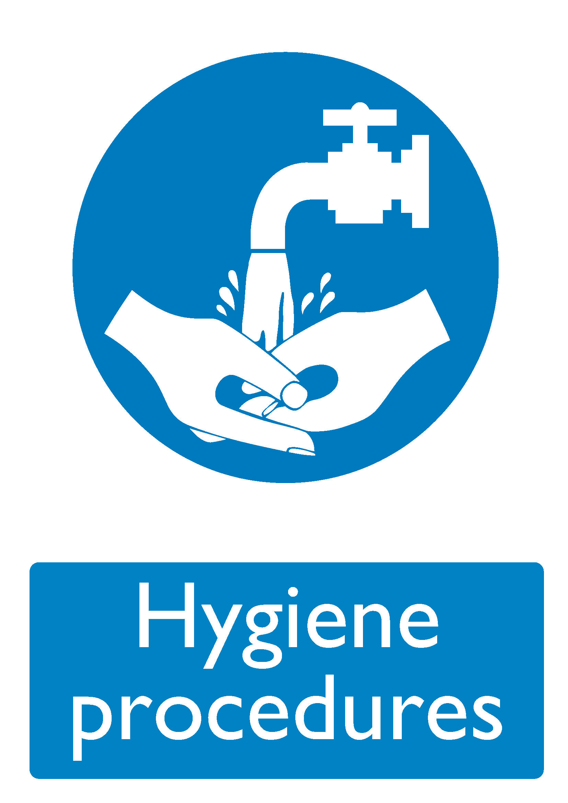

| Control ID (URI) |
https://bhdirectory.github.io/risk/control-register/hygiene-procedures.html |
|---|---|
| Control Icon |  |
| Description |
Personal hygiene is a very improtant aspect of controlling the spread of infection. Hand washing facilities are available in every resident's room and in all wash rooms. Staff are trained in hand-washing techniques. Anti-bacterial gels are available at the main entrances of the building where visitors are encouraged to use them. Other rules around hair, nails and clothing can be found in the Employee Handbook. |
| Risk Assessments | |
| Further Information |
|